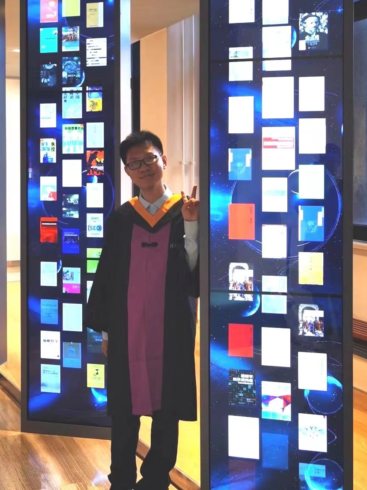

|  | 2020-now: Ph.D. Candidate, Computer Science, Tsinghua University |
Hong Chen received B.E. from the Department of Electronic Engineering, Tsinghua University, Beijing, China in 2020.
He is currently a Ph.D. Candidate in the Department of Computer Science and Technology of Tsinghua University.
His main research interests include automated machine learning and multimodal information processing.
Curriculum Disentangled Recommendation with Noisy Multi-feedback, NeurIPS2021
Hong Chen, Yudong Chen, Xin Wang, Ruobing Xie, Rui Wang, Feng Xia, Wenwu Zhu
Auxiliary Learning with Joint Task and Data Scheduling, ICML2022
Hong Chen, Xin Wang, Chaoyu Guan, Yue Liu, Wenwu Zhu
Module-Aware Optimization for Auxiliary Learning, NeurIPS2022
Hong Chen, Xin Wang, Yue Liu, Yuwei Zhou, Chaoyu Guan, Wenwu Zhu
CurML: A Curriculum Machine Learning Library, ACM MM2022
Yuwei Zhou, Hong Chen, Zirui Pan, Chuanhao Yan, Fanqi Lin, Xin Wang, Wenwu Zhu
Multimodal Disentangled Representation for Recommendation, ICME2021
Xin Wang, Hong Chen and Wenwu Zhu
Disentangled Representation Learning for Recommendation, TPAMI2022
Xin Wang, Hong Chen, Yuwei Zhou, Jianxin Ma and Wenwu Zhu
Large-Scale Graph Neural Architecture Search, ICML2022
Chaoyu Guan, Xin Wang, Hong Chen, Ziwei Zhang, Wenwu Zhu
Curriculum-NAS: Curriculum Weight-Sharing Neural Architecture Search, ACM MM2022
Yuwei Zhou, Xin Wang, Hong Chen, Xuguang Duan, Chaoyu Guan, Wenwu Zhu
Dynamic Spatio-Temporal Modular Network for Video Question Answering, ACM MM2022
Zi Qian, Xin Wang, Xuguang Duan, Hong Chen, Wenwu Zhu
AVQA: A Dataset for Audio-Visual Question Answering on Videos, ACM MM2022
Pinci Yang, Xin Wang, Xuguang Duan, Hong Chen, Runze Hou, Cong Jin, Wenwu Zhu
Lessons learned from the NeurIPS 2021 MetaDL challenge:Backbone fine-tuning without episodic meta-learning dominates for few-shot learning image classification, NeurIPS2021 Competition and Demonstration Track
Adrian El Baz, Ihsan Ullah, Hong Chen, et al.